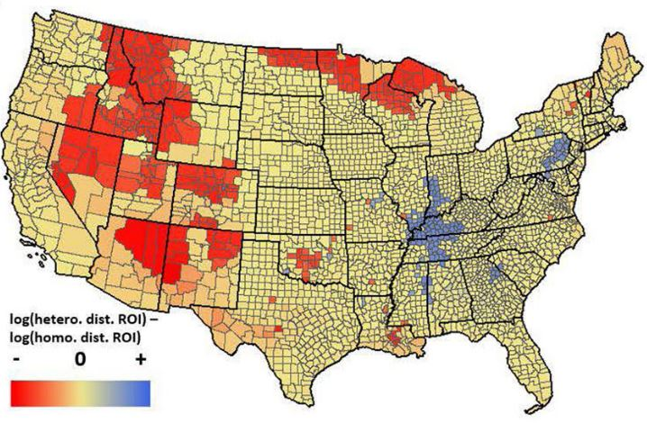
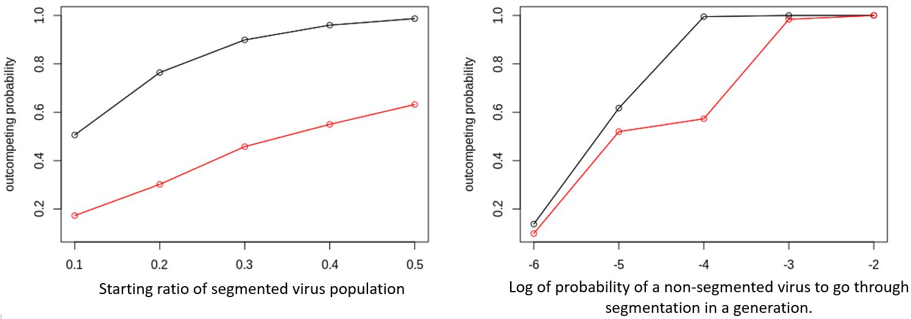

Projects
Dynamic Management of Endangered Species Using Reinforcement Learning
Management of endangered species requires repeated decisions under deep ecological uncertainty, yet decision-support tools often rely on oversimplified population models that limit their credibility and adoption. To solve this issue, I developed a framework that directly links ecological inference with decision optimization by integrating integrated population models (IPMs) with deep reinforcement learning (DRL), allowing management strategies to be optimized using realistic, data-driven representations of population dynamics.
I applied this approach to the hatchery supplementation program for the endangered Rio Grande silvery minnow, where managers must balance extinction risk against genetic impacts and management cost while responding to stochastic hydrologic and demographic conditions. The DRL-derived decision models consistently outperform existing heuristic strategies across multiple management objectives, identifying when to produce hatchery fish, and how to allocate stocking across river reaches. Analysis of the learned policies reveals interpretable ecological decision rules, showing how optimal actions depend on monitoring catch, forecasted flow volume, and effective population sizes.
More broadly, this work demonstrates how reinforcement learning can serve as a practical dynamic management tool, transforming complex ecological data into transparent and defensible conservation decisions. This research has actually got translated into an web-based operational decision-support tool based on the trained DRL models, called Stockminnow, which is now being used by managers to guide hatchery supplementation decisions for the Rio Grande silvery minnow. By closing the gap between ecological modeling and on-the-ground decision-making, this framework provides a scalable pathway for applying artificial intelligence to real-world endangered species management under uncertainty.

Performance of deep reinforcement learning–derived decision models for hatchery supplementation of the Rio Grande silvery minnow. Points show the mean local persistence rate across the three isolated habitats plotted against the mean hatchery production level, which is proportional to management cost. The decision models collectively trace a clear Pareto frontier, illustrating the trade-off between persistence and production. Colors indicate the value of persistence relative to management cost under different management objectives that the decision models were trained under, with warmer colors reflecting greater emphasis on persistence. Circles denote decision models trained with perfect information on true population abundance; triangles denote models trained using monitoring-derived catch data only; the diamond indicates the current operational supplementation strategy; and the square represents a maximum-production strategy with equal stocking across habitats.

Hatchery production decisions learned by the deep reinforcement learning model as a function of environmental and monitoring information. Points show the production decision that the model made for the given spring flow forecast and total monitored catch aggregated across April and the previous October–November, which together summarize hydrologic and recent population conditions available to managers. The distribution illustrates how the decision model can produce interpretable management recommendations for the supplementation effort in response to combined signals of flow conditions and monitoring-derived abundance proxies.
Structured Decision Making for Environmental Flow Management
Many conservation and natural resource management problems involve repeated decisions under uncertainty, competing objectives, and binding institutional constraints. Structured decision making (SDM) provides a formal framework for addressing these challenges by explicitly defining objectives, alternatives, trade-offs, and uncertainties, and by creating transparent, defensible links between scientific information and management actions. By clarifying where uncertainty matters most—and where it does not—SDM helps managers make better-informed decisions even when data are incomplete or outcomes are highly uncertain.
I have been part of a collaborative, multi-agency structured decision-making process to support environmental flow management for the federally endangered Rio Grande silvery minnow (RGSM) in the Middle Rio Grande. In partnership with the U.S. Bureau of Reclamation, we convened a multi-stakeholder workshop to clarify management objectives, decision alternatives, statutory and operational constraints, and key uncertainties related to climate change, hydrologic forecasting, and species responses to flow actions. A central challenge addressed by this workshop was the timing of flow-release decisions, which must be made before critical information, such as the magnitude and duration of summer monsoon flows, is known, creating a dynamic risk problem for managers.
The resulting decision-support framework from the SDM will eventually allow managers to compare current operational practices with alternative flow strategies, evaluate trade-offs among ecological outcomes, feasibility, cost, and public support, and document the rationale behind decisions.

Pictures of the structured decision making workshop for the Rio Grande silvery minnow environmental flow management held at the New Mexico Department of Game and Fish headquarters in July 2025.
Conservation Land Acquisition Planning
Land acquisition is one of the most widely used conservation strategies, yet decisions about where and when to protect land are often made using static assumptions about land value, development pressure, and conservation benefit. A lot of my research examined quantitative planning frameworks that examines at spatial and temporal dimensions of land acquisition to improve conservation outcomes under limited budgets.
On the temporal axis, I examine how the financial and institutional characteristics of conservation organizations shape their spending patterns over time, and how these acquisition timings influence the conservation impact of acquisitions under different economic conditions (Figure 1). I also demonstrate that conservation priorities are highly sensitive to the time horizon over which benefits are evaluated, such that organizations with different planning horizons may rationally prioritize very different lands for protection today even when working with the same ecological and economic data.
On the spatial axis, I’ve examined how much accounting for the spatial variation in different factors that determine the conservation value of lands affects land acquisition planning. For example, I demonstrate that planning frameworks that incorporate spatial variation in future land-use pressure and ecological additionality can avoid large opportunity costs and identify markedly different, and more cost-effective, protected area networks (Figure 2). Also, I show that conservation acquisitions can feed back into local land markets, altering future land prices and development pressure, such that accounting for the variation in these feedbacks across different markets is critical for robust acquisition planning.

Figure 1. Total conservation benefit of acquired lands using various acquisition patterns under a temporally fluctuating market environment. Horizontal line shows the baseline total conservation benefit created with random acquisition.
Figure 2. Difference in the return on investment of land acquisition between assuming spatially heterogeneous ecological disturbance and homogeneous ecological disturbance by counties.
Related publication:
Yoon, H. S. & Armsworth, P. R. (2022).
Timing land protection to exploit favorable market conditions.
Biological Conservation, 270.
Yoon, H. S., Vijay, V., & Armsworth, P. R. (2022).
Accounting for spatial heterogeneity in the added conservation value of land protection when prioritizing protected areas.
Conservation Biology, 36(5).
Yoon, H. S., Mingie, J., Cho, S., Barve, N., & Armsworth, P. R. (2025).
Land market feedback from land acquisition influences the prioritization of protected area networks
in the southeastern United States.
Ambio.
Armsworth, P. R., Fovargue, R., Hyman, A., Iacona, G., Sims, C., & Yoon, H. S. (2025).
Strategically timing land protection decisions to enhance biodiversity benefits.
Conservation Biology.
Freshwater fish and mussels and hydropower operation in the face of climate change
Climate change is reshaping freshwater ecosystems through shifts in temperature and flow regimes, with important consequences for both biodiversity conservation and hydropower operations. In this research, I examine how climate-driven changes in the distributions of freshwater fish and mussel species interact with hydropower reservoirs across the conterminous United States, and how these ecological changes feed back into the environmental mitigation costs faced by hydropower operators.
Using large-scale ecological niche models coupled with hydrologic simulations, I project future changes in species distributions under climate change and quantify how these shifts alter species richness, community turnover, and exposure to dam-altered thermal regimes. I then link these projected biodiversity changes to observed patterns in regulatory mitigation requirements, estimating how compliance costs for hydropower facilities are likely to change across regions.
This work highlights how climate impacts on biodiversity can propagate through coupled social–ecological systems, altering not only conservation priorities but also the economic landscape faced by renewable energy infrastructure. By explicitly connecting climate-driven ecological change to management costs, this research provides a framework for anticipating and planning for biodiversity–energy trade-offs under future environmental change.

Projected climate-driven changes in biodiversity mitigation costs for private hydropower facilities across the conterminous United States. Circles indicate hydropower plant locations, with symbol size proportional to installed power capacity (log₁₀ MW). Colors represent the log-transformed cost change in estimated mitigation costs under future climate conditions, where red indicates cost decreases and blue indicates cost increases.

Projected changes in freshwater species richness across river basins in the conterminous United States under future climate conditions. Colors indicate the difference between projected future and current species richness (future − current), with blue tones representing increases and red tones representing declines in the number of freshwater fish and mussel species. Green outlines delineate major river basin boundaries, highlighting strong spatial heterogeneity in biodiversity responses to climate change across hydrologic networks.
Related publication:
Yoon, H. S., Corsi, F., Miara, A., Welch, J., & Jager, H. (2024).
Climate-driven shifts in freshwater biodiversity will impact mitigation costs for hydropower.
Science of the Total Environment, 954(1).
Cited in drafting the 2025 Tennessee State Wildlife Action Plan.
Wealth Inequality and sustainable resource management
Community-based management of common-pool resources, such as fisheries, irrigation, and forests, often relies on voluntary cooperation and peer sanctioning rather than centralized enforcement. In this research, I examine how wealth inequality among resource users shapes the effectiveness of these self-regulating governance systems, focusing on situations where communities impose sanctions on over-exploitation.
Using a game-theoretic model, I found that the relationship between wealth inequality and resource sustainability is highly non-linear. Sustainable outcomes can emerge both under high equality, where cooperation is maintained through collective sanctioning, and under high inequality, where resources are effectively maintained through de facto privatization by the wealthiest individuals. However, at intermediate levels of inequality, cooperative management can break down, leading to inefficient outcomes. The analysis also demonstrated that the severity and cost of sanctions can also affect whether voluntary governance can persist across different inequality regimes. This work challenged simple assumptions about trade-offs between equity and efficiency in environmental governance and highlighted the conditions under which inequality can either undermine or sustain collective resource management.
 Right: Model predictions of individual contributions to a public good as a function of the wealth share held by the richest group. Dotted and dashed lines indicate contributions by the poorer and richer individuals, respectively, while the solid line shows the total contribution. Total contributions follow a V-shaped pattern, indicating that resource management is most effective under extremes of wealth inequality.
Right: Model predictions of individual contributions to a public good as a function of the wealth share held by the richest group. Dotted and dashed lines indicate contributions by the poorer and richer individuals, respectively, while the solid line shows the total contribution. Total contributions follow a V-shaped pattern, indicating that resource management is most effective under extremes of wealth inequality.
Left: These findings can be translated to resource-sharing communities that practice self-governance, such as rice farming villages in Nepal that rely on shared irrigation infrastructure. In such systems, maintenance of irrigation structures may be most effective under moderate inequality in land ownership among villagers but could deteriorate when inequality reaches intermediate levels that weaken both collective action and individual incentives. However, with even higher inequality, maintenance could again improve as wealthier individuals internalize a larger share of the benefits and effectively assume responsibility for sustaining the shared infrastructure.
Related publication:
Yoon, H. S. & Armsworth, P. R. (2025).
The role of wealth inequality in community management of common-pool resources through voluntary sanctioning.
Natural Resource Modeling.
Evolution of Segmented Viruses Under Negative Selection and Genetic Drift
In an asexual population where mutation rate is sufficiently high and purifying selection against deleterious mutations is not strong enough, the population increases in mutational load due to genetic drift, a mechanism known as Muller's rachet. However, with reciprocal genetic exchange between haploid genomes in a sexual reproduction, the effect of genetic drift on the speed of the ratchet can be reduced. RNA viruses are ideal for testing evolutionary hypotheses regarding the effect of sexual reproduction on Muller’s ratchet as they have either segmented or non-segmented RNA genome. With segmented genome, exchange of genetic materials may occur when two different virus strains coinfect the same host. In this project, I studied how segmented RNA that goes through reassortment could have evolved from more simple, non-segmented RNA. I simulated the competition between non-segmented and two-segmented haploid individuals under deleterious mutation-selection balance and genetic drift in different structures. I found that there are meta-population structures that provide ideal condition for segmented viruses to dominate the population through competitive exclusion (Figure 1).

Figure 1. Probability of segmented viruses to outcompete the unsegmented under different parameter values (left: starting frequency of segmented; right: rate of emergence of segmented viruses) in a panmictic population structure (red) and in a meta-population structure with 30 demes (black).